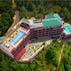

THE PANORMIC GATEWAY

Munnar's picturesque Panoramic Getaway features a heated rooftop pool, a spa and BBQ specialties at Underground Grill Society.
Location: A beautiful getaway, The Panoramic Getaway at Munnar is a 5 star resort offering an experience of pristine valleys and mountains and their exotic species of flora and fauna. It is set in the wild sanctuary and forest, with the aroma of spice scented cool air.The panoramic Getaway Resort has won various prestigious awards including the TripAdvisor Traveler's choice 2016, Yatra.com Luxury Hotel Award and World Luxury Hotel Award 2016. The hotel is 10 km from Munnar. Attractions nearby include Dream Land Spice Park and Fun Forest Adventure Park (2 km), Attukad Waterfalls (8 km) and Tea Gardens (12 km). Cochin International Airport is 95 km away while Munnar Railway Station 83 km from the hotel.
Room Amenities: Every room except family rooms in this 5 star resort overlooks a sea of green trees and towering mountains. The Deluxe rooms, Deluxe suites, Family rooms, Panoramic suites and the Pavilion suites have mini bar, Wi-Fi, LED TV, and rain shower.
Hotel Facilities: This family friendly resort offers world class amenities including heated rooftop pool fitness center, activity hall, world class Spa, helipad, and a terrace garden well suited for candle night dinners.
Dining: The Panoramic Getaway seeks to offer pure flavors from quality ingredients.The coffee shop Chimes in the expansive lobby provides guests with a quick bite and hot drinks. The Aimie Multi Cuisine Restaurant serves delicious local, Indian, Chinese, Arabic, South Indian, and Continental cuisine. The Underground Grill Society specializes in grilled, barbecued and Mexican food.
| RATINGS |
| HOTEL 5 STAR |
| LOCATION-4.59 |
| FACILITIES-4.68 |
| FOOD-4.55 |
| CLEANLINESS-4.77 |
| ROOMS-4.68 |
| HOSPITALITY-4.58 |
| LOCATION |
| exotic location |
| 10 KM FROM MUNNAR |
| 2 KM TO FUN FOREST ADVENTURE PARK |
| 8 KM TO ATTUKAD WATERFALLS |
| 12 KM TO TEA GARDENS |
HOTEL AMINITIES
| MINI BAR |
| FREE WIFI |
| LED TVS |
| RAIN SHOWERS |
| HEATED ROOF TOP POOL |
| FITNESS CENTER |
| ACTIVITY HALL |
| SPA |
| HELIPAD |
| TERRACE GARDEN |
DEALS
| TOTAL ROOMS-50 |
| DELUXE ROOM |
| DELUXE SUITES |
| PANORMIC SUITES |
| PAVILLION SUITES |